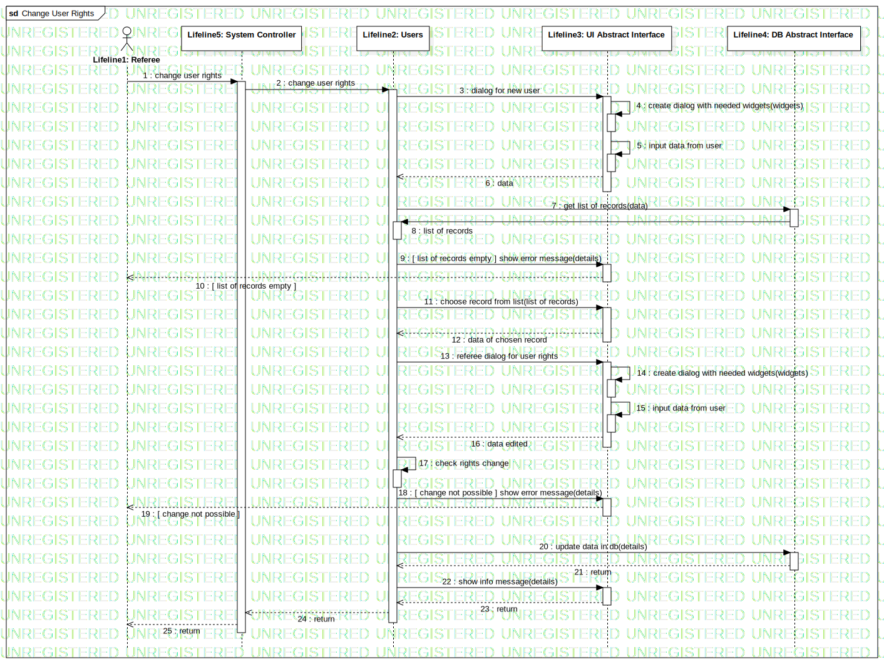

Interaction1
UMLInteraction
Untitled
::
Model1
::
Collaboration7
::
Interaction1
Description
none
Diagrams

Change User Rights
Participants
Lifeline1: Referee
Lifeline2: Users
Lifeline3: UI Abstract Interface
Lifeline4: DB Abstract Interface
Lifeline5: System Controller
Messages
change user rights (Lifeline1→Lifeline5)
change user rights (Lifeline5→Lifeline2)
dialog for new user (Lifeline2→Lifeline3)
create dialog with needed widgets (Lifeline3→Lifeline3)
input data from user (Lifeline3→Lifeline3)
data (Lifeline3→Lifeline2)
get list of records (Lifeline2→Lifeline4)
list of records (Lifeline4→Lifeline2)
[ list of records empty ] show error message (Lifeline2→Lifeline3)
[ list of records empty ] (Lifeline3→Lifeline1)
choose record from list (Lifeline2→Lifeline3)
data of chosen record (Lifeline3→Lifeline2)
referee dialog for user rights (Lifeline2→Lifeline3)
create dialog with needed widgets (Lifeline3→Lifeline3)
input data from user (Lifeline3→Lifeline3)
data edited (Lifeline3→Lifeline2)
check rights change (Lifeline2→Lifeline2)
[ change not possible ] show error message (Lifeline2→Lifeline3)
[ change not possible ] (Lifeline3→Lifeline1)
update data in db (Lifeline2→Lifeline4)
return (Lifeline4→Lifeline2)
show info message (Lifeline2→Lifeline3)
return (Lifeline3→Lifeline2)
return (Lifeline2→Lifeline5)
return (Lifeline5→Lifeline1)
Properties
Name
Value
name
Interaction1
stereotype
null
visibility
public
isReentrant
true
Owned Elements
Change User Rights